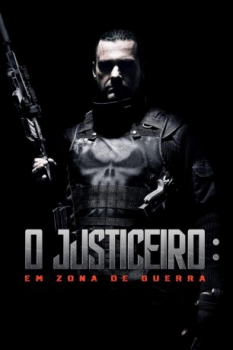

O Justiceiro: Em Zona de Guerra (2008)


A vingança tem um nome

Avaliação (TMDb):


5.7/10 (747 votos)
Avaliação (Usuário):
Outro Título:Punisher: War Zone
País:United States, 102 minutos
Idiomas falados:Inglês, Espanhol, Português, Thai
Gênero(s):Ação, Crime
Diretor(s):Lexi Alexander
Codec:MPEG-2 (DVD)
Número: 3663
Sinopse:
Depois de caçar e matar centenas de criminosos violentos, Frank Castle, conhecido como "The Punisher", terá de enfrentar um de seus piores inimigos: Jigsaw. Sequência de "The Punisher - O Justiceiro".
Elenco:
Ray Stevenson, Dominic West, Julie Benz, Colin Salmon, Doug Hutchison, Dash Mihok, Wayne Knight, Stephanie Janusauskas, Mark Camacho, Romano Orzari
Tipo de mídia: DVD5,
Legendas: Inglês, Espanhol, Mandarin, Português, Coreano, Thai,
Alugado: Não
Tela: 2.35:1